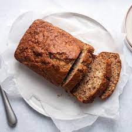
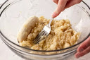
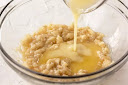
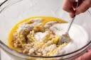
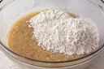
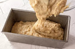
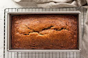

Banana Bread

Description
This banana bread has been the most popular recipe on Simply Recipes for over 10 years.
Thousands of people make it every day. Why?
Because it really is the best banana bread recipe, period.
You can mix everything in one bowl,
you can vary the amount of sugar or bananas.
And the secret to its great flavor? Melted butter.
The beauty of this banana bread recipe is you don't need a fancy mixer! A mixing bowl,
a fork to whisk the eggs and a sturdy spoon to mix the batter are all you need.
The sugar amount is flexible. The original recipe called for a cup of white sugar, but most people,
including me, do just fine with 3/4 of a cup, and many are happy with a 1/2 cup.
You can toss in a cup of chopped nuts, raisins, or chocolate chips if you want, or put the batter
into muffin tins and make banana nut muffins instead. You can even go a step further
and make chocolate banana bread.
Ingredients
- 2 to 3 medium (7" to 7-7/8" long) very ripe bananas,
peeled (about 1 1/4 to 1 1/2 cups mashed)
- 1/3 cup (76g) butter, unsalted or salted, melted
- 1/2 teaspoon baking soda
- 1 pinch salt
- 3/4 cup (150g) sugar (1/2 cup if you would like
it less sweet, 1 cup if more sweet)
- 1 large egg, beaten
- 1 teaspoon vanilla extract
- 1 1/2 cups (205g) all-purpose flour
Instructions
- Preheat the oven to 350°F (175°C), and butter a 4x8-inch loaf pan.
- In a mixing bowl, mash the ripe bananas with a fork until completely smooth.
Stir the melted butter into the mashed bananas.


- Mix in the baking soda and salt. Stir in the sugar, beaten egg, and vanilla
extract.
Mix in the flour.


- Pour the batter into your prepared loaf pan.
Bake for 50 minutes to 1 hour
at 350°F (175°C), or until a toothpick or wooden
skewer inserted into the
center comes out clean. A few dry crumbs are okay;
streaks of wet batter
are not. If the outside of the loaf is browned but the center
is still
wet, loosely tent the loaf with foil and continue baking until the loaf
is fully baked..

- Remove from oven and let cool in the pan for a few minutes. Then remove
the banana
bread from the pan and let cool completely before serving.
Slice and serve.
(A bread knife helps to make slices that aren't crumbly.)
Wrapped well, the banana bread
will keep at room temperature for 4 days.
For longer storage, refrigerate the loaf up to
5 days, or freeze it.

Click here to return home